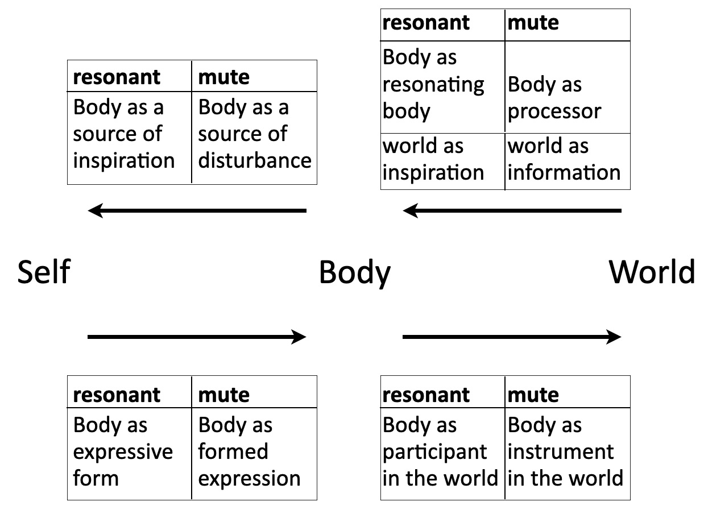
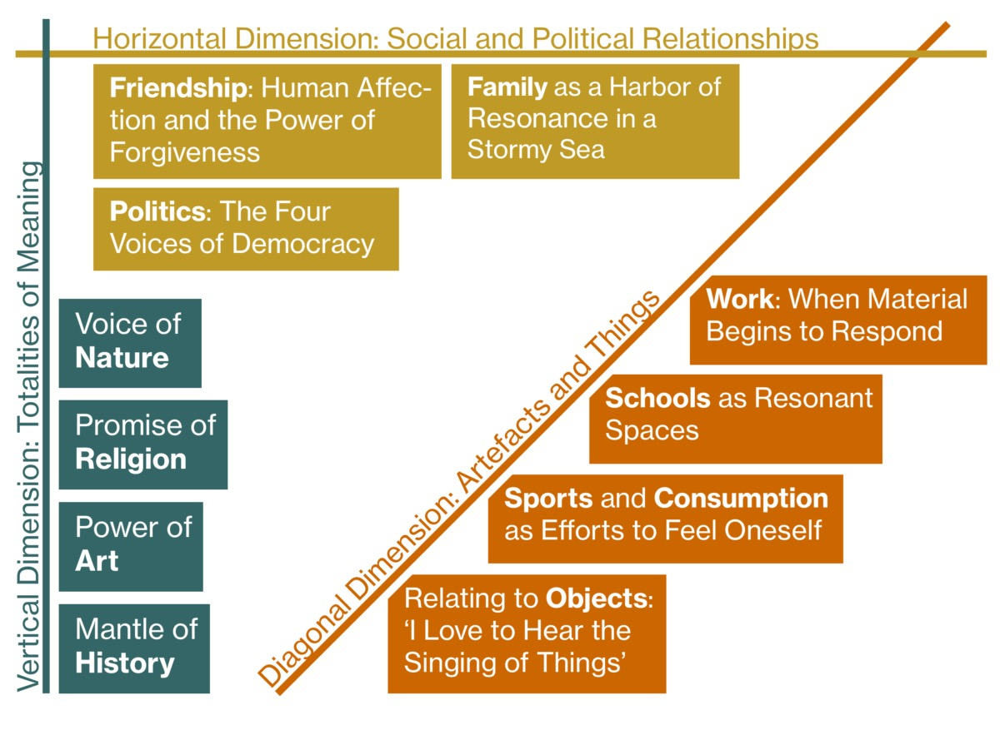

Verslag nummer 94
Toegevoegd op dinsdag 5 mei 2026
1.419 woorden
Resonance
Sinds ik in 2023 zijn Resonanz heb gelezen ben ik best wel onder de indruk van het werk van Hartmut Rosa. Zijn analyses en beschrijving van onze laatmoderne tijd zijn niet alleen erg scherp en accuraat, hij laat ook zien hoe de problemen en uitdagingen van die tijd ontstaan zijn en wat mogelijke oplossingen hiervoor zijn. En hij verpakt dit alles in een zeer interessant en leerzaam sociaal-filosofisch raamwerk. Hoewel ik heel graag werk van Peter Sloterdijk lees, denk ik dat Rosa urgenter is.
Ik was dan ook blij verrast dat als centraal thema van het eerste jaar van de opleiding Time Based Design het begrip 'resonantie' kwam bovendrijven. Ik was namelijk gevraagd om binnen die opleiding de theorielessen te verzorgen, dus ik kon hier mooi het werk van Rosa introduceren. Omdat deze opleiding in het Engels gegeven wordt, vond ik dat ik ook maar de Engelse vertaling van het boek moest aanschaffen. En toen ik daar eenmaal in begon te lezen, kon ik het weer niet wegleggen – net als het Duitse origineel.
Ik ben inmiddels bezig met een soort masterclass te maken op basis van dit boek, en daarvoor komt binnenkort een heel eigen site online. In dit boekverslag beperk ik me daarom tot een kort overzicht van de belangrijkste punten uit het werk – wat op zich al voldoende stof zal opleveren.
1. Basale elementen van de menselijke relatie met de wereld.
Naast een voorwoord en een nawoord bestaat het boek uit vijftien hoofdstukken, verdeeld over vier delen. In het eerste deel gaat Rosa in op de basale verhoudingen met de wereld. Logischerwijs begint hij met een uitgebreide beschrijving van de zintuigen, die immers de meest directe verbinding met onze omgeving vormen. Naast tast en smaak en dergelijke gaat hij ook uitgebreid in op het zicht of de stem, maar ook op onze manier van staan, lopen, en slapen. Ook heeft hij aandacht voor de invloed van de wereld op onze fysieke gesteldheid, wanneer we kippenvel krijgen, bijvoorbeeld, of moeten huilen.
Na deze voorbereidende schermutselingen begint het echte werk. In het tweede hoofdstuk bespreekt hij het fenomeen dat we een lichaam zijn, maar ook een lichaam hebben. Door ons vermogen van zelfreflect kunnen we onze lichamelijkheid als onderwerp van studie aanschouwen, en dit zowel op een resonerende als op een vervreemdende manier. Dit levert uiteindelijk het onderstaande verhelderende schema op:

Rosa vervolgt zijn analyse met de vraag waardoor we ons voelen aangetrokken of juist voelen afgestoten door bepaalde elemenen van de wereld. Hij introduceert hier angst en begeerte als basale vormen van onze relatie met de wereld: vormen die grotendeels cultureel bepaald zijn en die direct gekoppeld zijn aan onze persoonlijke existentie. In navolging van Max Weber stelt Rosa dat de begeerte, de dingen die we werkelijk de moeite waard vinden, een psycho-sociaal-emotionele wereld vormen waartoe we ons verhouden en waarin we ons (mentaal, psychologisch) bewegen.
In het laatste hoofdstuk van dit eerste deel gaat hij dan eindelijk in op resonantie als psycho-sociale verhouding met de wereld. Op basis van spiegel-neuronen bespreekt hij intersubjectiviteit, intrinsic interest en perceived self-efficacy (een wat ongelukkige vertaling van Selbstwirksamkeitserwartungen). Hij eindigt dit deel met een concrete definitie van resonantie en vervreemding (het tegendeel), en de manier waarop deze twee in continue wisselwerking met elkaar staan.
2. Sferen en resonantieassen.
Het tweede deel van het boek gaat in op de verschillende assen en sferen van resonantie. Rosa onderscheidt horizontale, diagonale en verticale assen van resonantie. Familie, vrienden of politiek vallen in deze indeling onder de horizontale categorie; onze relatie met dingen en objecten, ons werk, school en opleiding of sport zijn canonieke voorbeelden van diagonale resonantieassen, terwijl religie, natuur, kunst of geschiedenis onder de verticale as geschaard worden.
Rosa geeft zelf aan dat dit een wat arbitraire en wellicht gekunstelde indeling is, maar hij maakt wel duidelijk waarom hij deze assen heeft gekozen en hoe de indeling heeft plaatsgevonden. Als het gaat om onze relatie met de wereld is die nooit op puur individuele basis gevormd: wat we vinden of willen komt voort uit onze opvoeding en onze vrienden, waardoor we een bepaalde verhouding tot de dingen krijgen. Maar deze verhouding, deze betekenis van de dingen, de waarde die we hieraan toekennen, is op zijn beurt weer ingebed in de transcendentale verbanden van samenleving, religie of geschiedenis.

De vele voorbeelden uit diverse gebieden die Rosa hier aanhaalt, variërend van Rilke tot Metallica, van het MoMa tot het Rock am Ring music festical maken duidelijk dat Rosa's analyse niet beperkt blijft tot de abstracte wereld van de academie, maar dat deze daadwerkelijk op allerlei concrete voorbeelden toepasbaar is, en ingezet kan worden om de vele hedendaagse problemen te duiden.
3. De angst voor het verstommen van de wereld.
Die hedendaagse problemen adresseert Rosa in het derde deel, waarin hij de moderniteit reconstrueert in termen van zijn resonantie-theorie. Afgezien van de enigszins obligate (hoewel zeer interessante) bespreking van wat moderniteit eigenlijk is, gaat hij hier in op zijn stelling dat moderniteit gezien kan (en moet) worden als de geschiedenis van de catastrofe van resonantie. Met zijn rationalisatie en zijn radicale focus op efficiëntie, berekenbaarheid en beschikbaarheid ontdoet de moderniteit de wereld van zijn magie. Rosa spreekt hier (opnieuw in navolging van Weber) over onttovering:
Making the world predictable and controllable is the core impulse behind what Weber describes as the 'Occidental' process of rationalization, which is of paramount significance to modernity's relationship to the world as a whole. Weber seeks to apprehend [this experience] sociologically as a process of disenchantment. Disenchantment is the conceptual complement in terms of relationships of a legal and economic, cultural and political process of rationalization that pervades the form of life of modernity as a whole and seeks to make the world predictable, controllable, comprehensible, calculable, and thus accessible (p.326)
Een wereld die op deze manier beschikbaar is gemaakt, heeft geen mogelijkheid meer om met zijn eigen stem te spreken en het is daardoor onmogelijk om nog een resonante relatie met die wereld aan te gaan. De wereld van de moderniteit is een stille (silent, verstummte) wereld.
4. Kritische theorie van onze relatie met de wereld.
In het vierde en laatste deel bespreekt Rosa onze relatie met de wereld vanuit het oogpunt van de theorieën die hij in de eerste drie delen van het werk heeft opgezet. Hij gaat hier uitgebreid in op de culturele, socio-structurele en geïnstitutionaliseerde factoren die deze relatie beïnvloeden (of zelfs mogelijk maken). Hij concludeert hier dat deze hedendaagse samenleving zich laat kenmerken door wat hij dynamische stabilisering noemt: de gedachte dat we steeds sneller moeten bewegen om onze positie in de wereld vast te houden (p.415).
Dit alles leidt er volgens Rosa toe dat de hedendaagse samenleving resonantieproblemen ervaart. Een crisis die zich onder andere manifesteert in de democratie, in de psychologie, in de milieuproblematiek, of in de dagelijks ervaren stress manifesteert:
The crisis of modernity as a whole is a crisis of humanity's relationship to the world, of the ways in which modern society institutionally and culturally relates to the world, and that in the stage of late modernity, this crisis has shaken this social formation's institutional mode of reproduction to its very foundations (p.425)
We moeten, kortom, weer op zoek naar een resonante relatie met de wereld. Hiervoor moeten we niet per se onthaasten, maar wel op zoek gaan naar de zaken en activiteiten die voor ons werkelijk betekenisvol zijn. In plaats van ons continu te richten op wat urgen maar niet belangrijk is, moeten we ons bezighouden met wat niet urgent maar wel belangrijk is (om dat obligate schema er maar even bij te betrekken).
Evaluatie en conclusie.
Ik moet zeggen dat ik blij ben dat ik het boek nogmaals heb gelezen, want omdat ik zelf ook alweer vier jaar verder ben, kan ik de belangrijkste punten nu nog beter in een groter geheel inkaderen. Het werk is oorspronkelijk uit 2019, maar het heeft in de voorbije zeven jaar volgens mij alleen maar aan urgentie gewonnen.
Ik ben wat minder blij met de vertaling door James Wagner. Er zijn sleutelbegrippen in Rosa's theorie die in het Duits echt iets anders uitdrukken dan hoe het vertaald is (bijvoorbeeld de reeds genoemde 'perceive self-efficacy' als vertaling van 'Selbstwirksamkeiterwartungen'). Maar hiervan afgezien zijn er zelfs enkele punten waar de vertaling gewoon een stuk overslaat, of de betekenis echt omdraait ('A person possessed of capital...' (p.23) - 'Wer über Geld [...] verfügt...', (p.48)).
Aan de andere kant is de index in de Engelse vertaling weer veel beter dan die in het Duitse origineel, dus ja, feitelijk heb je beide edities nodig om hier goed mee te kunnen werken. Ik heb echt veel zin om die masterclass te organiseren.